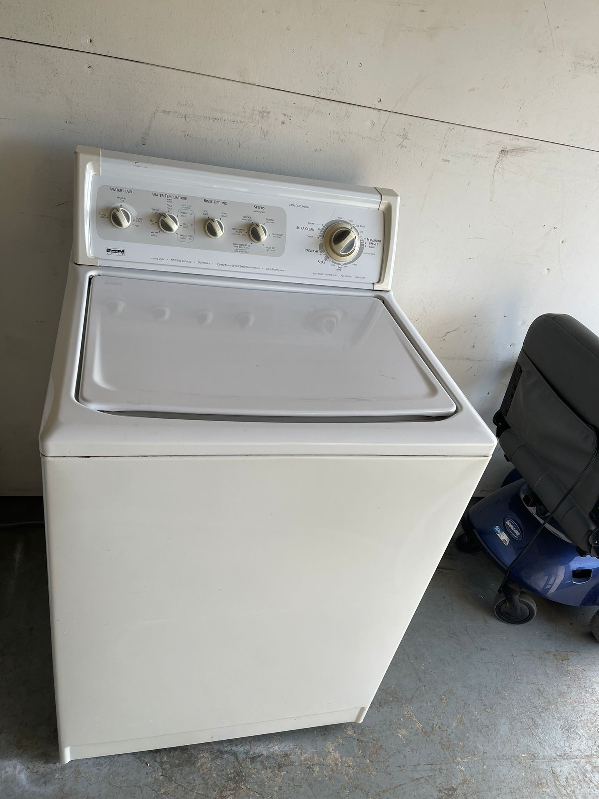

Phoenix Appliance Pickup & Removal
If you need a washer, dryer, refrigerator, freezer, stove, range or other qualifying major appliance picked up in Phoenix, submit the appliance condition, location and access details for review.
Appliances We Review for Pickup
Washers
Top-load and front-load washing machines, especially fully working units.
Dryers
Electric and gas dryers, including complete washer-and-dryer sets.
Refrigerators
Standard, side-by-side, bottom-freezer and French-door refrigerators.
Freezers
Upright and chest freezers in reusable condition.
Stoves & Ranges
Electric and gas stoves, ranges and ovens may be submitted.
What Qualifies for Free Pickup?
Free pickup is available for qualifying fully working appliances, or mixed loads where approximately 80% of the appliances work. Minor repairs may be considered. A nonworking appliance by itself does not qualify for free pickup.
Pickup Access in Phoenix
Tell us whether the appliance is in a garage, driveway, first floor, upstairs, basement or outside. Include stairs, narrow doors, tight hallways, gates and any door-removal concerns.
Photos help us understand appliance condition and access before scheduling.
Phoenix Metro Coverage
Phoenix is a priority Arizona market. Requests from Mesa, Chandler, Scottsdale, Glendale, Tempe and nearby communities can also be submitted through our Arizona appliance pickup page.
Real Appliance Example

Phoenix Appliance Recycling Alternative
If an appliance does not qualify for our pickup, the City of Phoenix provides appliance recycling information for residents. Phoenix lists transfer-station drop-off options and a scheduled curbside appliance pickup service, with different rules for appliances that contain refrigerant.
Official City of Phoenix appliance recycling information
Check the city's current customer eligibility, preparation requirements and fees before using the program.
Frequently Asked Questions
Is appliance pickup free in Phoenix?
Qualifying working appliances and eligible mixed loads may receive free pickup after review.
Do you pick up washers and dryers?
Yes. Washers, dryers and complete laundry sets are priority categories.
Can I submit several appliances?
Yes. List every appliance and its condition in one request.
Appliance Pickup Guides
Learn what information helps us review each major appliance category.
How Our Pickup Service Works
Free pickup is qualification-based. Learn how requests are reviewed and what information helps determine eligibility.